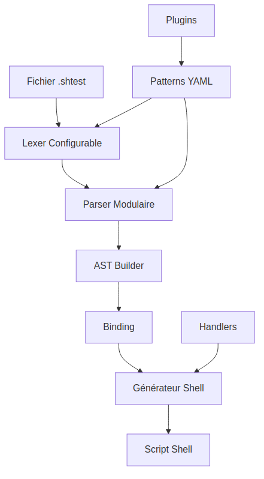

Guide de Démarrage Rapide pour Développeurs
Ce guide vous aide à comprendre rapidement l'architecture modulaire de KnightBatch et à commencer à développer.
Architecture en 5 Minutes

Si l'image ne s'affiche pas, voici le diagramme Mermaid :
Pipeline de Compilation
- Tokenisation : Le fichier
.shtestest découpé en tokens par le lexer configurable. - Parsing : Les tokens sont analysés par le parser modulaire pour produire un AST (arbre syntaxique).
- Construction de l'AST : L'AST builder valide et normalise la structure.
- Binding :
- Le binder relie chaque validation à la bonne action (notamment pour
scope: last_action). - Résout les variables et le contexte.
- Prépare l'AST pour la génération de code.
- Pourquoi c'est important ? Sans binding, certaines validations seraient orphelines ou mal appliquées, ce qui fausserait les résultats des tests.
- Génération de code : Le générateur de shell parcourt l'AST lié et produit un script shell exécutable.
- Exécution : Le script shell généré peut être exécuté directement.
Composants Principaux
1. Core (core/)
- visitor.py : Pattern Visitor pour parcourir l'AST
- ast.py : Nœuds AST de base (ActionNode, ValidationNode, etc.)
- context.py : Contexte de compilation partagé
2. Lexer Modulaire (parser/lexer/)
- configurable_lexer.py : Lexer principal
- pattern_loader.py : Chargement des patterns YAML
- filters.py : Filtres de tokens
- tokenizers.py : Tokenizers spécialisés
3. Parser Modulaire (parser/)
- configurable_parser.py : Parser principal
- ast_builder.py : Constructeur d'AST avec validation
- grammar.py : Grammaire configurable
4. Compilateur Modulaire (compiler/)
- compiler.py : Compilateur principal
- visitors/shell_visitor.py : Générateur de code shell
- matchers/ : Matchers pour les validations
5. Validation AST (parser/ast_builder.py)
- Validateurs : Vérification de la structure et du contenu
- Transformateurs : Normalisation et amélioration de l'AST
- Gestion d'erreurs : Messages clairs et localisés
Exemple de Workflow Complet
from shtest_compiler.core.context import CompileContext
from shtest_compiler.parser.lexer.configurable_lexer import ConfigurableLexer
from shtest_compiler.parser.configurable_parser import ConfigurableParser
from shtest_compiler.compiler.compiler import ModularCompiler
# 1. Créer le contexte
context = CompileContext()
# 2. Configurer le lexer
lexer = ConfigurableLexer("config/patterns_hybrid.yml")
# 3. Configurer le parser avec validation
parser = ConfigurableParser("config/patterns_hybrid.yml")
# 4. Configurer le compilateur
compiler = ModularCompiler()
# 5. Traiter un fichier
with open("test.shtest", "r") as f:
content = f.read()
# Tokenisation
tokens = lexer.tokenize(content)
# Parsing avec validation automatique
try:
ast = parser.parse_tokens(tokens)
except ParseError as e:
print(f"Erreur de validation: {e}")
sys.exit(1)
# Compilation
shell_script = compiler.compile(ast)
Système de Validation
Validateurs Intégrés
Le système inclut des validateurs pour détecter les erreurs courantes :
# Validation des étapes
def _validate_steps(self, ast: ShtestFile) -> List[str]:
"""Valide que les étapes ont une structure appropriée."""
errors = []
for i, step in enumerate(ast.steps):
if not step.name or step.name.strip() == "":
errors.append(f"Step {i+1} has empty name")
if len(step.actions) == 0:
errors.append(f"Step '{step.name}' has no actions")
return errors
# Validation des actions
def _validate_actions(self, ast: ShtestFile) -> List[str]:
"""Valide que les actions ont une structure appropriée."""
errors = []
for step in ast.steps:
for i, action in enumerate(step.actions):
if action.command is None and action.result_expr is None:
errors.append(f"Action {i+1} in step '{step.name}' has neither command nor result")
return errors
Ajouter un Validateur Personnalisé
# 1. Créer la fonction de validation
def my_custom_validator(ast: ShtestFile) -> List[str]:
errors = []
for step in ast.steps:
# Votre logique de validation
if some_condition:
errors.append("Mon message d'erreur")
return errors
# 2. L'ajouter au builder
class CustomASTBuilder(DefaultASTBuilder):
def __init__(self):
super().__init__()
self.validator.add_validator(my_custom_validator)
Ajouter un Nouveau Matcher
# 1. Créer la fonction matcher
def custom_matcher(validation_text: str) -> str:
if "mon validation" in validation_text:
return "custom_validation_type"
return None
# 2. Enregistrer dans le contexte
context.add_matcher("custom_matcher", custom_matcher)
# 3. Ajouter dans le shell visitor
class CustomShellVisitor(ShellVisitor):
def visit_custom_validation(self, node):
return f"# Validation personnalisée: {node.validation}"
Ajouter un Nouveau Type de Token
# Dans config/patterns_hybrid.yml
tokens:
custom_token:
pattern: "MonPattern:\\s*(.+)"
type: "CUSTOM_TOKEN"
priority: 5
# Dans le AST builder
class CustomASTBuilder(ASTBuilder):
def build_custom_token(self, tokens):
return CustomNode(tokens[0].value)
Créer un Plugin
Voir Créer un plugin pour un guide étape par étape.
Tests
Tests Unitaires
# tests/unit/test_my_feature.py
import pytest
from shtest_compiler.core.context import CompileContext
def test_my_matcher():
context = CompileContext()
context.add_matcher("my_matcher", my_matcher_function)
result = context.get_matcher("my_matcher")("ma validation")
assert result == "my_validation_type"
Tests d'Intégration
def test_full_pipeline():
# Test complet du pipeline
context = CompileContext()
lexer = ConfigurableLexer("config/patterns_hybrid.yml")
parser = ConfigurableParser("config/patterns_hybrid.yml")
compiler = ModularCompiler()
content = "Action: test ; Résultat: success"
tokens = lexer.tokenize(content)
ast = parser.parse_tokens(tokens)
result = compiler.compile(ast)
assert "test" in result
assert "success" in result
Tests E2E
# tests/e2e/test_my_feature.py
def test_my_feature_e2e():
# Test avec un fichier .shtest réel
result = subprocess.run([
"python", "-m", "shtest_compiler.run_all",
"--input", "tests/e2e/my_feature.shtest"
], capture_output=True, text=True)
assert result.returncode == 0
assert "Generated" in result.stdout
Tests Négatifs
# tests/e2e/ko/test_invalid_my_feature.shtest
# Test avec syntaxe invalide pour votre fonctionnalité
def test_invalid_my_feature():
result = subprocess.run([
"python", "-m", "shtest_compiler.run_all",
"--input", "tests/e2e/ko/test_invalid_my_feature.shtest"
], capture_output=True, text=True)
assert result.returncode == 1
assert "error" in result.stderr.lower()
Debug et Diagnostic
Mode Debug
Inspection de l'AST
# Afficher l'AST
def print_ast(node, indent=0):
print(" " * indent + str(node))
if hasattr(node, 'children'):
for child in node.children:
print_ast(child, indent + 2)
print_ast(ast)
Validation des Tokens
# Afficher les tokens générés
for token in tokens:
print(f"{token.kind}: '{token.value}' (line {token.lineno})")
Outils de Debug Intégrés
# Debug d'un fichier spécifique
python tests/e2e/ko/debug_parser.py
# Mode debug du compilateur
python -m shtest_compiler.run_all --input file.shtest --debug
Gestion d'Erreurs
Types d'Erreurs
from shtest_compiler.parser.core import ParseError
# Erreur de parsing
raise ParseError("Message d'erreur", lineno=10, column=5)
# Erreur de validation
raise ParseError("AST validation failed: " + "; ".join(errors))
Codes de Sortie
import sys
# Succès
sys.exit(0)
# Erreur de validation
sys.exit(1)
# Erreur de configuration
sys.exit(2)
# Erreur système
sys.exit(3)
Exécution des Tests
Suite Complète
# Tous les tests
python -m pytest tests/
# Tests unitaires uniquement
python -m pytest tests/unit/
# Tests E2E
python src/shtest_compiler/run_tests.py --all
# Tests négatifs
python tests/e2e/ko/run_ko_tests.py